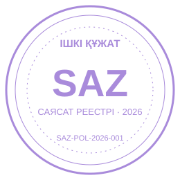

Мазмұны
- Құжаттың мақсаты және сайт деректері
- Қолданылу аясы және негізгі ұғымдар
- Сайт мүмкіндіктері және офлайн жұмыс
- Музыкалық және өзге құқықтарды сақтау
- Пайдаланушыға берілетін пайдалану мүмкіндігі
- Рұқсатсыз көшіру және зиян келтіру шектеулері
- Саяси бейтараптық және редакциялық тәуелсіздік
- Этникалық теңдік, әдеп және қолжетімділік
- Құпиялық: деректердің нақты сақталуы
- Үшінші қызметтер және дербес дерекке қатысты құқықтар
- Қауіпсіздік және кәмелетке толмағандар
- Құқық иесінің өтініші және контентті қайта қарау
- Жауаптылық, өзгерістер және даулар
- Ішкі мөр, тіркеу және құжаттың тұтастығы
14 бөлім · 100 тармақ. Қажет сөзді немесе тармақ нөмірін ізде.
Құжаттың мақсаты және сайт деректері
Осы саясат SAZ музыкалық веб-қолданбасын пайдалану, контентке құқықтарды сақтау, құпиялық, саяси бейтараптық, этникалық теңдік және өтініштерді қарау қағидаларын белгілейді. Төмендегі 1.1–14.8 нөмірлері — сайттың ішкі тармақтары; олар заң баптарының нөмірлері емес.
Сайттың иесі және әкімшісі: Бердібек Мейірбек Болатбекұлы. Жоба атауы: SAZ. Негізгі мекенжайы: https://mikosh001.github.io/offline-music-player/. Құқықтар, құпиялық және техникалық мәселелер бойынша байланыс: berdibekmejirbek08@gmail.com.
Иесінің аты-жөні сайт әкімшілігінің сәйкестендіру дерегі ретінде көрсетіледі. Бұл құжат заңды тұлғаның тіркелгенін, тауар белгісінің тіркелгенін, мемлекеттік лицензияны немесе музыкалық құқықтардың иеленуін куәландырмайды.
Құжат нөмірі: SAZ-POL-2026-001. Ағымдағы нұсқа: 1.2, жаңартылған күні: 22 қараша 2026 жыл. Алғашқы 1.0 нұсқасы 05 қазан 2026 жылы дайындалған және мұрағатта сақталған. Жаңа нұсқа сайтта жарияланған сәттен қолданылады; бұрынғы әрекеттерге жаңа міндет кері күшпен жүктелмейді.
Саясат Қазақстан Республикасының заңнамасы негізінде дайындалды. Міндетті заң нормалары, құқық иесімен жасалған нақты келісім және пайдаланушыға қолданылатын өзге міндетті құқықтық кепілдіктер басым болады; осы мәтін оларды жоймайды.
Ішкі графикалық мөр мен тіркеу нөмірі құжатты тану үшін қолданылады. Олар нотариалдық куәландыру, мемлекеттік тіркеу, авторлық құқық куәлігі немесе электрондық цифрлық қолтаңба болып саналмайды. Құжат тәуелсіз заңдық сараптамадан өткені туралы мәлімдеме жасалмайды.
Қолданылу аясы және негізгі ұғымдар
Құқықтық дереккөздер: Қ2 Қ4 Қ7
«Сайт» — SAZ интерфейсі, жарияланған каталог, сайтта орналастырылған аудио, құжаттар және офлайн веб-қолданба. Сайттың коды ашық репозиторийде болуы музыкалық жазбалардың да еркін лицензиямен берілгенін білдірмейді.
«Пайдаланушы» — сайтты браузерден немесе негізгі экранға орнатылған веб-қолданбадан ашатын тұлға. «Әкімші» — 1.2-тармақта көрсетілген сайт иесі немесе оның нақты өкілеттік берген тұлғасы.
«Құқық иесі» — тиісті құқықты иеленетін автор, орындаушы, фонограмма жасаушы, баспагер, өзге құқық иеленуші немесе олардың өкілі. Ән авторы, орындаушысы және дыбыс жазбасының құқық иесі әртүрлі тұлғалар болуы мүмкін.
«Жеке офлайн көшірме» — пайдаланушының өз тыңдауы үшін браузерінде сақталған аудио. «Қайта тарату» — файлды, аудионы қамтитын сақтық көшірмені немесе өзге дананы үшінші тұлғаларға беру, жариялау, сату не ортақ қолжетімді ету.
«Рұқсат» — нақты құқық иесінің тиісті пайдалану тәсілін қамтитын келісімі немесе қолданылатын лицензия. «Дереккөз» — файл алынған не метадерек тексерілген жер; дереккөз сілтемесінің өзі қайта тарату лицензиясын алмастырмайды.
Пайдаланушыға осы саясатпен танысуға тұрақты сілтеме беріледі. Сайтқа жай кіру барлық деректерді өңдеуге, трансшекаралық беруге немесе келешекте енгізілетін ақылы қызметтерге шексіз келісім деп түсіндірілмейді; қажет келісім бөлек алынуға тиіс.
Сайт мүмкіндіктері және офлайн жұмыс
SAZ ән іздеуге, орындаушы, альбом және стиль бойынша таңдауға, музыка ойнатуға, ұнағандарды белгілеуге, плейлист пен ойнату кезегін құруға, араластыруға және қайталауға арналған. Жеке микстер тыңдау тарихына сүйеніп осы құрылғыда жасалады. Осы нұсқада тіркелу, ақылы жазылым және құрылғылар арасында автоматты синхрондау жоқ.
Каталогтағы толық аудио саны интерфейсте және ағымдағы аудиофайлдар реестрінде көрсетіледі. Іріктеу уақыт өте өзгеруі мүмкін; бұл толық дискографияны білдірмейді. Әнді ойнату мен сақтау интерфейстегі нақты қолжетімділікке, желіге және құрылғының мүмкіндігіне тәуелді.
Интернетсіз тыңдау үшін пайдаланушы әнді алдын ала «Офлайнға сақтау» арқылы жүктейді. Көшірме сайт серверінде ғана тұрып, байланыссыз ойналмайды: офлайн аудио пайдаланушы құрылғысының осы браузеріндегі сақтау орнында болады.
Негізгі экранға орнату SAZ-ды веб-қолданба ретінде ашуға мүмкіндік береді. Бұл App Store немесе Google Play дүкенінде ресми жарияланған жеке мобильдік қосымша мәртебесін білдірмейді. Орнату, фондық ойнату және құлып экраны басқаруы браузерге тәуелді.
Өз құрылғысынан импортталған ән файлдары, жеке плейлисттер және каталог өзгерістері сайттың қазіргі кодында серверге жарияланбайды. Пайдаланушы жергілікті кітапханасын өзгерткенде басқа адамдардың ортақ каталогы өзгермейді.
Сақтық көшірме экспорты .saz файлына аудио мен кітапхана деректерін енгізуі мүмкін. Ол жеке қалпына келтіруге арналған; мұндай файлды ортақ чатқа, бұлт папкасына не сайтқа тарату үшін тиісті құқық бөлек қажет.
Браузер деректері тазаланса, жеке режим жабылса, сақтау орны толса немесе жүйе кэшті жойса, офлайн әндер жоғалуы мүмкін. «Сақтауды қорғау» мүмкіндігі абсолютті кепілдік бермейді. Жүктелмеген әнді интернетсіз тыңдау мүмкін емес.
Музыкалық және өзге құқықтарды сақтау
Әннің сөзі мен әуені, орындау және фонограмма құқықтары тиісті құқық иелерінде қалады. SAZ каталогқа қосу немесе MP3 файлын сақтау арқылы бұл құқықтарды өз меншігі деп жарияламайды.
Орындаушы мен авторды көрсету, шығарманың атауын дұрыс беру және авторлық белгілерді сақтау міндетті. Қате атрибуция, жалған авторлық, құқық иесінің келісімінсіз шығарманы бұрмалау және құқық туралы мәліметті алып тастауға жол берілмейді.
Ортақ сайтта аудио жариялауға негіз болатын рұқсат онлайн тыңдатуды, серверде сақтау мен көшірмелеуді, пайдаланушыға жеке офлайн көшірме беруді, аумақты және мерзімді тиісті көлемде қамтуы керек. Бір тәсілге рұқсат өзге тәсілдерге автоматты түрде таралмайды.
Әкімшілік аудионың дереккөзі мен рұқсат негізін каталогта және жеке реестрлерде көрсетеді. Ағымдағы файлдар, көлемдер, SHA-256 хэштері және жазбаларды салыстыру нәтижелері current-audio-publication.json ішінде берілген. Дыбыстың сәйкестігін салыстыру құқықтың барын растамайды; дереккөз сайттың өз рұқсаты SAZ-ға автоматты түрде берілмейді.
Қазіргі музыкалық жинақ бойынша рұқсаттың жарияланған негізі — жинақты берген тұлғаның жеке келісімдер бар деген мәлімдемесі. Жеке хаттардың түпнұсқасы сайтта тәуелсіз расталған деп көрсетілмейді. Осы саясат жаңа лицензия бермейді және рұқсаттың орнына жүрмейді.
Музыканың бастапқы рұқсат құжаттары өзгеріссіз сақталады. SAZ-20261005-001 — бастапқы мәлімдеме, SAZ-20261121-002 — қосымша 95 ән жөніндегі сайт иесінің мәлімдемесін тіркейтін реестр. Бұлар SAZ-POL-2026-001 саясатынан бөлек ішкі есеп нөмірлері; мемлекеттік лицензия немесе тәуелсіз тексеру белгісі емес.
Көрсетілген альбом мұқабалары — SAZ үшін жасалған өзіндік редакциялық графика; олар орындаушының фотосуреті немесе шығарылымның түпнұсқа мұқабасы деп ұсынылмайды. Бұл графикаға CC0-1.0 белгісі artwork-credit.json ішінде берілген. Әндер мен фонограммаға осы графиканың лицензиясы таралмайды. Код пен өзге компоненттің бөлек көрсетілген лицензиясы өз көлемінде сақталады.
Пайдаланушыға берілетін пайдалану мүмкіндігі
Құқықтық дереккөздер: Қ2
Сайт ұсынатын және оған қатысты құқықтық негіз қамтитын толық әнді жеке, коммерциялық емес тыңдау үшін ойнатуға және «Офлайнға сақтау» арқылы осы браузерде сақтауға болады. Әкімші өзінде жоқ құқықты пайдаланушыға бере алмайды.
Жеке кітапхана жасауға, ұнағандарды белгілеуге, плейлист құруға, тректерді араластыруға және жеке сақтық көшірме жасауға сайт мүмкіндік береді. Бұл әрекеттер файлдарды көпшілікке ұсыну немесе музыканы коммерциялық пайдалану құқығын бермейді.
Әнге бағыттайтын сайт сілтемесін бөлісуге болады. Құқық иесінің бөлек рұқсатынсыз ән файлын, аудионы қамтитын архивті немесе сақтық көшірмені бөлісу сілтемені бөлісумен тең емес.
Заңда көзделген жеке мақсаттағы көшірмелеу және басқа еркін пайдалану жағдайлары өз шарттарымен сақталады. Авторлық құқық туралы заңның 18 және 26-баптары әртүрлі талаптарды қамтиды; бұл саясат оларды жалпы «бәрін көшіруге болады» рұқсатына айналдырмайды.
Аудионы бейнероликке, жарнамаға, ойынға, ремикске, коммерциялық орындауға немесе басқа сервиске енгізу үшін осы тәсілді қамтитын құқықтық негіз қажет. Жеке офлайн тыңдау мүмкіндігі мұндай лицензияны алмастырмайды.
Кафе, дүкен, іс-шара немесе өзге ортада көпшілікке музыка ойнату үшін қажетті құқықтар мен шарттар бөлек анықталады. SAZ-ға тегін кіру көпшілік алдында орындауға немесе коммерциялық пайдалануға жалпы рұқсат бермейді.
Ән бойынша жеке лицензия осы саясаттан кең мүмкіндік берсе, сол лицензияның нақты шарттары қолданылады. Құқық иесінің рұқсаты аяқталса немесе құқықтық негіз өзгерсе, сайттағы кейінгі қолжетімділік қайта қаралады.
Рұқсатсыз көшіру және зиян келтіру шектеулері
Құқық иесінің тиісті рұқсатынсыз сайттағы әнді басқа сайтқа, әлеуметтік желіге, мессенджер арнасына, торрентке немесе ортақ бұлт қоймасына қайта жариялауға не таратуға болмайды. Заң рұқсат ететін нақты ерекшеліктер бұған кірмейді.
Рұқсатсыз аудио сату, ақылы архив жасау, басқа сервиске музыка қоры ретінде қосу немесе сайттағы жеке тыңдау мүмкіндігін коммерциялық ұсынысқа айналдыруға болмайды.
Құқық туралы белгі, орындаушы аты, лицензия мәліметі немесе файлдың қайдан алынғанын көрсететін деректі құқық бұзуды жасыру үшін алып тастауға, ауыстыруға не жалған мәліметпен алмастыруға болмайды.
Каталогты немесе оның елеулі бөлігін басқа музыкалық қызметті толықтыру үшін автоматты түрде жаппай көшірмелеуге осы саясат рұқсат бермейді. Сайттағы кәдімгі офлайн сақтау мүмкіндігімен жеке әндерін дайындау бұл шектеумен теңестірілмейді.
Серверге шамадан тыс сұрау жіберу, қызметті әдейі істен шығару, зиянды код енгізу, рұқсатсыз жабық дерекке қол жеткізу немесе қорғанысты айналып өтуге болмайды. Заңдық жауаптылық нақты әрекет пен заң құрамының болуына қарай анықталады.
SAZ әкімшілігін, орындаушыны не құқық иесін жалған таныстыруға, жалған рұқсат құжатын жасауға, жоба мөрін лицензия белгісі ретінде пайдалануға және бөгде тұлғаның атынан өтініш беруге болмайды.
Өзге адамның жеке дерегін, жасырын хаттарын, байланысын не жеке кітапханасын оның заңды келісімінсіз жариялауға болмайды. Құқыққа қатысты дәлелді әкімшілікке беру оны бүкіл сайтта жариялауға келісім болып саналмайды.
Сайттың ашық аудио URL-дары мен браузерлік сақтауы файлды техникалық тұрғыда шығарып алуды толық тоқтатпайды; DRM немесе абсолютті көшірме қорғанысы іске асырылған деп мәлімделмейді. Осы бөлім — пайдалану шектеуі, техникалық кепілдік емес.
Саяси бейтараптық және редакциялық тәуелсіздік
SAZ-дың мақсаты — музыка тыңдау және музыкалық мәдениетпен танысу. Сайт әкімшілігі каталогқа енгізуді саяси партияны, кандидатураны, мемлекеттік органды немесе саяси қозғалысты ресми қолдау белгісі ретінде ұсынбайды.
Орындаушының пікірі, әннің көркем мазмұны және жеке шығармашылық ұстанымы әкімшіліктің ұстанымымен автоматты түрде теңестірілмейді. Заңды саяси пікірдің болуы ғана адамды немесе шығарманы каталогтан алып тастауға негіз болмайды.
Каталогты іріктеу кезінде музыка стилі, тыңдау ыңғайлылығы, метадеректің дұрыстығы, аудио сапасы және құқықтық негіз ескеріледі. Партиялық тиістілік пен этникалық шығу тегі жасырын іріктеу шарты ретінде қолданылмайды.
Зорлыққа, соғысқа, алауыздыққа немесе адамдар тобының үстемдігіне заңсыз шақыру мен үгіттеуге жол берілмейді. Көркем контекст, дәйексөз, тарихи баяндау және заң талаптары нақты қаралады; даулы сөз жеке контекстен үзіліп бағаланбайды.
Әкімшілік өтінішті қарағанда дәлелге және бірдей өлшемге сүйенеді. Саяси келіспеушілік үшін қорқытуға, кек алуға, өтініш иесін кемсітуге немесе оның құпия дерегін жариялауға болмайды.
Келешекте демеушілік материал немесе жарнама қосылса, ол анық белгіленіп, тиісті шарттары бөлек жариялануға тиіс. Қазіргі нұсқада сайт ішінде саяси үгіт кабинеті, жарнама кабинеті немесе пайдаланушы жазбаларын жариялау алаңы жоқ.
Этникалық теңдік, әдеп және қолжетімділік
Тегіне, нәсіліне, ұлтына, этникалық тиістілігіне, тіліне, дініне, жынысына, жасына, денсаулық жағдайына, мүгедектігіне, әлеуметтік жағдайына немесе өзге жеке белгісіне байланысты кемсітуге жол берілмейді.
Пайдаланушыдан ұлтын, дінін немесе саяси көзқарасын жариялау талап етілмейді. Каталогтың қазақ музыкасына бағытталуы өзге мәдениет пен тілдің қадірін төмендетуге немесе адамдарды қызметтен шеттетуге негіз болмайды.
Шығарма мен орындаушы атаулары мүмкіндігінше бастапқы жазылымымен беріледі. Іздеу үшін транслитерация қолданылуы мүмкін; ол адамның аты-жөнін әдейі бұрмалау немесе этникалық мазақ ету үшін қолданылмайды.
Қорлау, қудалау, қорқыту, этникалық не діни кемсіту, адамды кем санайтын жалпылау және жеке деректі кек алу үшін таратуға жол берілмейді. Пікір мен шығарманы дәлелді сынау адамның қадір-қасиетін қорлаумен теңестірілмейді.
Музыка жанры, тіл, танымалдық немесе тыңдау статистикасы адамдардың құндылығының өлшемі ретінде ұсынылмайды. Ұсыну мен сұрыптау саяси, этникалық немесе діни артықшылықты насихаттауға арналмайды.
Интерфейс мобильдік құрылғыда, пернетақтамен және көмекші технологиялармен пайдалануға ыңғайлы болуға ұмтылады. Нақты қолжетімділік кемшілігі туралы өтініш 1.2-тармақтағы байланысқа қабылданады; барлық құрылғыға толық сәйкестік сертификаты мәлімделмейді.
Каталогтағы қате атрибуция, кемсітетін сипаттама немесе негізсіз шектеу туралы шағым қайта қаралады. Әкімшілік түзету жасаса, бастапқы дәлел мен шешімнің негізін қажетті көлемде сақтайды, құпия мәліметті көпшілікке шығармайды.
Сайтқа жеке файл қосу көпшілікке жариялау болып саналмайды. Қазіргі нұсқада қоғамдық пікір бөлімі мен ашық пайдаланушы жүктеуі жоқ; мұндай мүмкіндік енгізілсе, модерация, есеп беру және шағымдану тәртібі алдын ала жаңартылады.
Құпиялық: деректердің нақты сақталуы
SAZ осы нұсқада пайдаланушы аккаунтын, ЖСН-ін, паспортын, нақты тұрғылықты мекенжайын немесе төлем картасын талап етпейді. Микрофон, камера, контактілер тізімі және геолокацияға рұқсат сұрамайды.
Браузердің жергілікті дерекқорында импортталған және офлайн сақталған аудио, атау мен орындаушы, плейлист, ұнағандар, тыңдау саны мен соңғы ойнату, жеке каталог және файл көлемі сақталуы мүмкін. Бұлар кітапхана мен ойнатуды іске асыру үшін қажет.
Ойнату кезегі, ағымдағы ән, тоқтаған секунд, дыбыс деңгейі, араластыру, қайталау, қуат үнемдеу және ұсыныстар баптауы осы браузерде сақталады. «Саған арналған» миксі ұнағандар, тыңдау саны, орындаушы мен стильге; «Көптен тыңдамағандар» кемінде жеті күн бұрын тыңдалған әндерге; «Жаңа әндермен танысу» осы құрылғыда әлі ойналмаған әндерге сүйенеді. Офлайнда тек сақталған аудио таңдалады. Жеке ұсыныстарды есептеу үшін тарих серверге жіберілмейді.
Интерфейс, каталог, саясат және SAZ мұқабалары офлайн ашылу үшін браузер кэшінде сақталады. Аудио «Офлайнға сақтау» арқылы бөлек сақталады. Соңғы ойнату орны мен баптаулардың жедел көшірмесі localStorage ішінде болуы мүмкін. Бұл техникалық сақтау жарнамалық бақылау үшін қолданылмайды. Саясат бетінің жарық не қараңғы көрінісін таңдау да осы браузерде сақталады.
Жеке файл импорттау немесе .saz сақтық көшірмесін ашу кезінде файл браузерде өңделеді. Экспортталған көшірмені пайдаланушы өзі таңдаған жерге сақтайды. Жеке файлды кейін e-mail не басқа сервис арқылы өзі жіберсе, ол бөлек әрекет болады.
Ағымдағы SAZ кодында жарнамалық пиксельдер мен жеке тыңдау аналитикасы қосылмаған. Хостингтің техникалық журналдары мен сыртқы қызметтердің өңдеуі бұдан бөлек: сайтқа кіру барлық желілік дерек мүлде жиналмайды дегенді білдірмейді.
Баптаулардан жеке микстерді көрсетуді өшіруге және тыңдау тарихын тазалауға болады. Тарихты тазалау тыңдау саны мен соңғы тыңдалған уақытты жояды, ұнағандар, плейлисттер мен офлайн файлдарды сақтайды; кейін тыңдалған әндер үшін жаңа тарих қалыптасады. Барлық жергілікті деректі браузердің осы сайтқа арналған деректерін тазарту арқылы жоюға болады. Әкімші жеке кітапхананы қашықтан оқитын немесе өшіретін панельге ие емес.
Ортақ каталог пен сервердегі MP3 файлдары ашық сайттың бөлігі. Оларға жеке файл қоймасындағыдай құпиялық уәде берілмейді. Құпия келісімдерді, жеке хаттарды және үшінші тұлғаның деректерін ашық репозиторийге салуға болмайды.
Үшінші қызметтер және дербес дерекке қатысты құқықтар
Құқықтық дереккөздер: Қ3 Қ8 Қ9
Сайт GitHub Pages арқылы беріледі. Хостинг желілік сұрауларға байланысты IP-мекенжай, құрылғы және сұрау уақыты сияқты техникалық деректерді өз құпиялық саясаты бойынша өңдеуі мүмкін. SAZ әкімшілігі хостинг журналдарын толық басқаратынын мәлімдемейді.
Ресми музыкалық параққа немесе сыртқы сілтемеге өзіңіз өткенде сол қызмет сұрауды алады және оның шарттары қолданылады. Сыртқы аудио не сурет URL-ын өзіңіз байланыстырсаңыз, оны ашу кезінде сол серверге желілік сұрау жасалуы мүмкін. Әдепкі SAZ мұқабалары сайттың өзінен беріледі; олар үшін сыртқы сурет қызметіне сұрау жіберілмейді.
Әкімшілікке e-mail жібергенде жіберуші адресі, хат мәтіні, сұралған байланыс дерегі және өзі тіркеген дәлелдер өңделеді. Мақсат — сол өтінішті қарау, жауап беру және қажет болса құқықтық дауды шешу. Хат коммерциялық тарату тізіміне автоматты қосылмайды.
Байланыс үшін Gmail қолданылатындықтан, хат пен тіркеме Google инфрақұрылымында, соның ішінде Қазақстаннан тыс жерде өңделуі мүмкін. Сайт барлық дерек тек Қазақстанда сақталады деп мәлімдемейді. Құпия немесе артық деректерді хатқа қоспау ұсынылады.
Дерекқор орналасуы мен трансшекаралық беру мәселелері заңның 12 және 16-баптарына сай бөлек бағалануға тиіс. Шетелдік сервис туралы хабарлау Қазақстандағы сақтау талабын алмастырмайды. Қажет келісім не өзге заңды негіз болмайынша жаңа орталық деректер қорын іске қосуға болмайды.
Пайдаланушы деректердің болуы, мақсаты мен сақталуы туралы ақпарат сұрауға, заңда көзделген негіздер бойынша түзетуді, бұғаттауды, анонимдеуді немесе жоюды талап етуге және келісімін қайтарып алуға құқылы. Өтініш 1.2-тармақтағы e-mail-ға беріледі; міндетті заң ерекшеліктері сақталады.
Өтініш хаттарында тек қажетті дәлел сақталады. Қарау мақсаты аяқталып, заңды сақтау негізі қалмаса, әкімшіліктің бақылауындағы артық дерек жойылады немесе анонимделеді. Бұл ереже Gmail мен хостингтің өз журналдарын бірден жою кепілдігін бермейді.
Жергілікті аудионы сайттың кітапхана мәзірінен өшіруге болады; бүкіл жергілікті деректерді жою үшін браузердің осы сайт деректерін тазарту мүмкіндігі қолданылады. Бұл плейлист пен офлайн әндерді де жоғалтады. Адресаттың сәйкестігін тексеру үшін қажетті ең аз дерек сұралады; ЖСН немесе паспорт әдеттегі талап емес.
Қауіпсіздік және кәмелетке толмағандар
Құқықтық дереккөздер: Қ3 Қ4 Қ5
Сайт HTTPS арқылы ашылады. Әкімшілік код пен жарияланған файлдардың дұрыстығын бақылауға, белгілі ақауларды түзетуге және құқыққа қатысты негізді өтініштерді қарауға ұмтылады. Қауіпсіздік толық бұзылмайды деген абсолютті кепілдік берілмейді.
Сенімсіз .saz не каталог файлын ашпау, құрылғыны қорғау және браузерді жаңартып отыру ұсынылады. Сақтық көшірмеде жеке плейлист пен аудио болуы мүмкін; оны жариялаудан бұрын оның мазмұнын тексеру қажет.
Сайтта зиянды файл, дерек ағуы немесе қауіпсіздік осалдығы байқалса, оның сипаттамасы мен қажет минималды дәлел әкімшіге жіберіледі. Тексеру кезінде бөгде кітапханаға кіру, қызметті істен шығару немесе құпия деректі жариялау рұқсат етілмейді.
Музыка мазмұны әртүрлі болуы мүмкін. Кәмелетке толмаған пайдаланушының тыңдауын ата-анасы немесе заңды өкілі жасына және жағдайына қарай бағалайды. Сайт барлық ән үшін жас санатын толық тексергенін не балаларға қауіпсіздік сертификатын мәлімдемейді.
Кәмелетке толмағаннан заңда қажет келісімсіз дербес дерек жинау немесе шарт жасасуды талап етуге болмайды. Сайт аккаунт ашуға не төлем жасауға мәжбүрлемейді; келешекте мұндай қызмет қосылса, жасқа қатысты талаптар бөлек белгіленеді.
Баланың жеке дерегі, қорқыту немесе қауіпті мазмұн жөніндегі нақты хабарлама басымдықпен қаралады. Әкімшілік қабылдайтын шара заңға, қолда бар дәлелге және сайттың нақты техникалық мүмкіндігіне сәйкес болады.
Құқық иесінің өтініші және контентті қайта қарау
Авторлық құқық, атрибуция, рұқсат немесе жеке дерек туралы өтініш berdibekmejirbek08@gmail.com адресіне жіберіледі. Хат тақырыбына «SAZ — құқық туралы өтініш» немесе «SAZ — дербес дерек туралы өтініш» деп көрсетуге болады.
Өтініште даулы әннің атауы, орындаушысы, сайт URL-ы не каталог ID-і, өтініш иесінің құқыққа қатысы, мәселенің сипаттамасы, қажетті шара және жауап беретін байланыс көрсетіледі. Құқықты не өкілдікті растайтын қажетті дәлел ғана тіркеледі.
Жеке келісімдер мен хаттардың артық бөліктерін жабуға болады. Әкімші дәлелдің жеткіліксіздігін нақты түсіндіріп, қажет мәліметті сұрайды. Өтініш беру үшін құпия хатты көпшілікке жариялау немесе құжаттың барлық жеке дерегін ашу талап етілмейді.
Әкімшіліктің ішкі қызмет көрсету мақсаты — түскен хатты 3 жұмыс күні ішінде алғанын растау және жеткілікті мәлімет түскен соң 10 жұмыс күні ішінде бастапқы шешім беру. Қосымша тексеру керек болса, себебі мен күтілетін мерзім хабарланады. Бұл заңдағы арнайы мерзімдерді алмастырмайды.
Құқықтың жоқтығы немесе айқын бұзылуы жөнінде негізді дәлел болса, әкімшілік тексеру кезінде даулы аудионы жария қолжетімділіктен уақытша алып тастауды қарастырады. Бұл шағымды біржола дәлелденді деп тану емес; тараптардың түсіндірмесі ескеріледі.
Шешім аудионы алып тастау, рұқсат шегін өзгерту, атрибуцияны түзету, қосымша дәлел сұрау немесе себеппен өтінішті қабылдамау түрінде берілуі мүмкін. Өтініш иесі жаңа дәлелмен қайта қарауды сұрауға және заңды қорғау құралдарын қолдануға құқылы.
Серверден файлды алу бұрын жүктелген браузерлік көшірмелерді қашықтан автоматты жоймайды. Сайт жаңарғанда қолжетімді каталог өзгеруі мүмкін. Әкімшілік заңды шектеу туралы хабарласа, пайдаланушы оны ескеріп, қажет болса өз көшірмесін өшіреді.
Өтініш пен оның дәлелдері қажетті құпиялықпен өңделеді; жария есеп қажет болса, артық дерексіз қысқа мәртебе беріледі. Тек шағым түсті деген факт бойынша адам құқық бұзушы деп жарияланбайды; кінә мен жауаптылық заңда белгіленген тәртіппен анықталады.
Жауаптылық, өзгерістер және даулар
Құқықтық дереккөздер: Қ2 Қ5 Қ6 Қ7
Әкімшілік ортақ сайтта өзі жариялайтын контенттің құқықтық негізі мен қызметтің нақты сипаттамасына жауапты. Жауаптылықты түгел пайдаланушыға ауыстыратын ереже қолданылмайды. Пайдаланушы өзінің импорттауы, кейінгі таратуы және өзге әрекеттері үшін қолданылатын заң шегінде жауап береді.
Саясатты бұзу автоматты түрде қылмыс немесе белгілі сомада айыппұл болып саналмайды. Азаматтық, әкімшілік немесе қылмыстық жауаптылық нақты құқық бұзушылық құрамына және заң талаптарына байланысты; оны уәкілетті орган немесе сот айқындайды.
SAZ осы саясат арқылы жеке айыппұл, тәркілеу, паспорт тексеруі немесе полицияға автоматты хабарлау жүйесін енгізбейді. Әкімшілік контентті түзетуге не алып тастауға және заңда көзделген қорғау құралдарын пайдалануға құқылы.
Сайттың үздіксіз жұмысы, хостингтің әрдайым қолжетімділігі, құрылғыда сақтау орнының сақталуы және барлық браузердің бірдей ойнатуы кепілдендірілмейді. Бұл ескерту заң бойынша алып тастауға болмайтын жауаптылықты немесе пайдаланушының міндетті құқықтарын жоймайды.
Жаңа функция, дерек жинау тәсілі немесе пайдалану шарты енгізілсе, саясаттың нұсқасы мен күні өзгертіледі. Елеулі өзгеріс сайтта көрінетін хабармен түсіндірілуге тиіс; қосымша келісім заң бойынша қажет болса, ол өзгеріс іске асқанға дейін бөлек алынады.
Дауды алдымен көрсетілген байланыс арқылы түсіндіру және дәлел алмасу жолымен шешуге болады. Бұл сотқа, уәкілетті органға немесе өзге заңды қорғау құралына жүгінудің міндетті құқықтарын шектемейді; e-mail жіберу сотқа жүгінудің әмбебап міндетті шарты емес.
Қолданылатын құқық пен істің қай органда қаралатыны нақты жағдайдағы заң және халықаралық міндеттемелер арқылы айқындалады. Құжат Қазақстан Республикасының құқықтық негізін көрсетеді; өзге елдің міндетті кепілдіктерін алып тастау немесе ойдан шығарылған ерекше соттылық белгілеу жасалмайды.
Ішкі мөр, тіркеу және құжаттың тұтастығы
Құқықтық дереккөздер: Қ4
Реестр атауы — «SAZ сайтының ішкі саясат реестрі». Ағымдағы жазба: SAZ-POL-2026-001, 1.1 нұсқа, 21 қараша 2026 жыл. Алдыңғы 1.0 нұсқасы мұрағатта сақталады. Нөмір әкімшіліктің ішкі есебі үшін жасалған; мемлекеттік құжат нөмірі емес.
Мөрде SAZ атауы, «ІШКІ ҚҰЖАТ», 2026 жылы және құжат нөмірі беріледі. Мемлекеттік елтаңба, нотариус атауы, мемлекеттік орган белгісі немесе лицензия расталды деген мәлімет қолданылмайды.
Графикалық мөр иесінің қолтаңбасын алмастырмайды. Бұл файлға нақты электрондық цифрлық қолтаңба қойылмаған. Цифрлық кодекстің 62-бабындағы қол қойылған электрондық құжатқа қойылатын талаптар мөр суретімен орындалды деп көрсетілмейді.
Саясат HTML және PDF түрінде беріледі. Екі нұсқа бір мәтіндік дереккөзден дайындалады. HTML бөлімдерге өтуге, PDF сақтау мен басып шығаруға арналған. Айырмашылық байқалса, әкімші тексеріп, бірдей мәтінді қайта жариялайды.
Ішкі реестр JSON файлында нұсқа, иесі, байланысы, жасалған күн, құқықтық дереккөздер, бет саны және SHA-256 бақылау сомалары көрсетіледі. Бақылау сомасы файл өзгерісін салыстыруға көмектеседі; ол құқықтың барын не қол қойған тұлғаны өздігінен растамайды.
Осы құжатта музыканың бастапқы рұқсат құжаттарына өзгеріс енгізілмейді. Жаңа саясат нөмірі нақты орындаушыға немесе дыбыс жазбасына берілген рұқсат нөмірі ретінде қолданылмайды.
Саясаттың құжаттан алынған қысқаша сипаттамасы толық мәтінге қайшы келмеуге тиіс. Мөрді, нөмірді немесе бет үзіндісін құжаттың мәртебесін бұрмалап пайдалану рұқсат етілмейді. Тиісті ашық лицензиямен берілген материалдардың құқықтары сақталады.
Әкімшілік байланысы: Бердібек Мейірбек Болатбекұлы, berdibekmejirbek08@gmail.com. Құжат мәртебесі: сайттың ішкі саясат мәтіні. Иесінің графикалық қолтаңбасы қолдан жасалмаған; тіркелген лицензия немесе ресми заңдық сараптама туралы жалған белгі жоқ.
Құқықтық және техникалық дереккөздер
Мұндағы сілтемелер ресми дереккөздерге бағыттайды. Актінің өзекті редакциясы мен күшіне енуі ресми мәтіннен анықталады; сілтемелер тізімі тәуелсіз заңдық қорытынды емес.
- Қ1 · Қазақстан Республикасының Конституциясы
2026 жылғы 15 наурыздағы республикалық референдумда қабылданған; 94-бап бойынша 2026 жылғы 1 шілдеден қолданылады.
16-бап — теңдік; 20-бап — қадір-қасиет; 21-бап — жеке өмір мен деректер; 22-бап — ұлттық және тілдік таңдау; 23-бап — шығармашылық, зияткерлік меншік және ақпарат еркіндігінің шектері.
- Қ2 · «Авторлық құқық және сабақтас құқықтар туралы» заң
1996 жылғы 10 маусым, № 6-I; 05.10.2026 күні қолданыстағы жинақталған мәтін.
15–16-баптар — автор құқықтары; 18 және 26-баптар — жеке көшірмелеу жағдайлары; 31–32 және 40-1-баптар — құқық беру; 37–38-баптар — орындау мен фонограмма; 48–49-баптар — бұзушылық және қорғау.
- Қ3 · «Дербес деректер және оларды қорғау туралы» заң
2013 жылғы 21 мамыр, № 94-V; 2026 жылғы өзгерістер ескерілген жинақталған мәтін.
7–8-баптар — өңдеу негізі мен келісім; 11–12-баптар — құпиялық, сақтау; 14, 16, 18-баптар — мақсат, трансшекаралық беру, жою; 24–25-баптар — субъект және оператор.
- Қ4 · Қазақстан Республикасының Цифрлық кодексі
2026 жылғы 9 қаңтар, № 255-VIII; күшіне енуі 106-баппен айқындалады.
10 және 13-баптар — қолжетімділік, цифрлық әдеп; 61–62-баптар — ЭЦҚ мен электрондық құжат. Графикалық мөр қол қойылған электрондық құжатпен тең емес.
- Қ5 · Қазақстан Республикасының Қылмыстық кодексі
2014 жылғы 3 шілде, № 226-V; 05.10.2026 күні қолданыстағы жинақталған мәтін.
174-бап — алауыздықты қоздыру; 198-бап — авторлық және сабақтас құқықтарды бұзу; 205-бап — құқыққа сыйымсыз қол жеткізу. Әрқайсысының нақты заңдық құрамы мен шарттары бар.
- Қ6 · Әкімшілік құқық бұзушылық туралы кодекс
2014 жылғы 5 шілде, № 235-V; 05.10.2026 күні қолданыстағы жинақталған мәтін.
79-бап — дербес деректерге қатысты заңнаманы бұзу. Құрам мен қолданылатын шарттарды уәкілетті орган бағалайды; сайт өз бетінше әкімшілік айыппұл салмайды.
- Қ7 · Қазақстан Республикасының Азаматтық кодексі, жалпы бөлім
1994 жылғы 27 желтоқсан, № 268-XIII; 05.10.2026 күні қолданыстағы жинақталған мәтін.
380-бап — шарт еркіндігі. Сайттың ережесі заңдағы міндетті құқықтарды немесе тарапқа берілмеген музыкалық құқықтарды алмастырмайды.
- Қ8 · GitHub General Privacy Statement
GitHub ресми құпиялық саясаты; 05.10.2026 күні қаралған.
Хостингтің техникалық деректерді өңдеуін түсіндіретін үшінші тарап саясаты. Бұл Қазақстан Республикасының заңы емес.
- Қ9 · Google құпиялық саясаты
Google ресми құпиялық саясаты; 05.10.2026 күні қаралған.
Gmail арқылы хат пен тіркемені өңдейтін үшінші тараптың саясаты. Бұл SAZ-дың лицензиясы немесе Қазақстан Республикасының заңы емес.
Байланыс және өтініш үлгісі
Төмендегі мәліметтерді өз хат қолданбаңда жазуға болады. Бұл бетте деректерді серверге жіберетін өтініш формасы жоқ.
Хат жазу- Өтініш тақырыбы
- SAZ — құқық туралы өтініш / SAZ — дербес дерек туралы өтініш.
- Өтініш иесі және байланыс
- Аты-жөні немесе ұйым атауы, жауап алатын e-mail, өкіл болса өкілдік негізі. Артық жеке дерек қажет емес.
- Даулы материал
- Ән атауы, орындаушы, сайттағы URL немесе каталог ID-і; мәселе жеке дерекке қатысты болса — сол деректің орналасуы.
- Негіз және дәлел
- Қандай құқық қозғалғаны, оны не растайтыны; қажет келісімнің не лицензияның тиісті бөлігі. Құпия және қатыссыз деректерді жабыңыз.
- Сұралған шара
- Аудионы алып тастау / атрибуцияны түзету / деректі жою немесе бұғаттау / қосымша түсіндірме. Нақты қалауыңызды жазыңыз.
- Күні және растау
- Күнін көрсетіп, мәліметтің білгеніңізше дұрыс екенін және өзіңіз не заңды өкіл ретінде жүгінгеніңізді жазыңыз. Бұл үлгі нотариалдық арыз немесе ЭЦҚ нысаны емес.
Нұсқалар және құжат реестрі

Сайттың ішкі саясат құжаты. ЭЦҚ-мен қол қойылмаған.
Бұл белгі мемлекеттік мөр, нотариалдық куәландыру немесе музыкалық лицензия емес.
Осы нұсқада не өзгерді?
- Қосымша 25 толық әннің дереккөздері мен ағымдағы аудио реестріне сілтемелер жаңартылды.
- Каталог саны интерфейс пен ағымдағы реестрден анықталады; саясатта өзгермейтін сан бекітілмейді.
- Алдыңғы 1.1 нұсқасы мұрағатқа сақталды. Пайдалану және құпиялық міндеттері өзгерген жоқ.